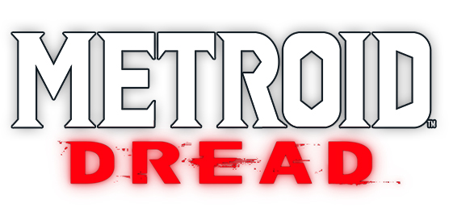

Metroid Prime 4 : enfin une image !!!
Posté le 18/02/22 par Bidoman
> On avait fini par ne plus y croire tellement Metroid Prime 4 ne donnait plus de nouvelles,
à part des offres d'emploi de Retro Studios pour bosser sur le jeu...
> Et justement, au détour de son simple compte Twitter,
Retro Studios s'est décidé à diffuser ENFIN un contenu lié au jeu !
Rendez-vous compte, c'est seulement le 2ème média associé au jeu en 5 ans, après le logo (sans doute provisoire)...
> Retro a donc changé sa bannière pour une image que je vous propose de découvrir dans la suite de la news ;)
>Lire la suite...
Des DLC pour Metroid Dread !
Posté le 09/02/22 par Bidoman

>Ce soir avait lieu un Nintendo Direct de 40 min, égrainant les grosses sorties à venir en 2022.
On n'attendait pas grand-chose pour Metroid, si ce n'est peut-être une annonce du portage supposé de Metroid Prime Trilogy.
Et au final, on a eu l'annonce d'un DLC gratuit pour Metroid Dread !
> Rien de bien incroyable, mais la mise à jour disponible dès aujourd'hui> rajoute deux modes de jeu : un mode Facile pour les gens qui galèrent,
et, à l'inverse, un mode Terreur impitoyable où le moindre coup vous tue instantanément ! Celui-là, ne comptez pas sur moi pour l'essayer ^^"
> Un autre DLC arrivera en avril et proposera un boss rush, là aussi gratuitement (normalement). Rien de bien incroyable mais des petites attentions
qui font plaisir et permettent de relancer un peu l'intérêt pour le jeu plusieurs mois après sa sortie !
Ventes record aux USA pour Metroid Dread !
Posté le 12/11/21 par Bidoman
> On s'en doutait un petit peu en voyant la campagne de communication énorme déployée pour la sortie de Metroid Dread,
ainsi que par les très nombreux retours de joueurs depuis un mois, ou encore la forte présence du jeu sur Twitch le weekend de sa sortie.
On savait aussi depuis quelques semaines que Metroid Dread avait réalisé le meilleur démarrage de la saga au Japon.
> Mais aujourd'hui, on a de nouvelles infos qui confirme le carton du jeu. C'est dans une interview au Washington Post
que le bien-nommé Doug Bowser, président de Nintendo of America, a donné les premiers chiffres de ventes officiels. Et ils sont colossaux, puisque Dread s'est écoulé
à 854 000 copies sur le territoire américain en octobre !! Monstrueux, c'est tout simplement le meilleur lancement de la série, surpassant
le record jusqu'ici détenu par Metroid Prime. On apprend d'ailleurs au passage que Dread a généré 2 fois plus de revenus que Prime lors du mois de lancement.
> À noter que certains pensent que ce chiffre inclut les ventes dématérialisées tandis que d'autres non. Toujours est-il que ce Metroid Dread est bien parti
pour devenir l'épisode le plus vendu de l'histoire de la saga. Il faudra attendre encore un peu pour avoir une vision globale (sans doute avril prochain lors du prochain gros bilan de Nintendo),
mais on sait d'ores et déjà que Dread est un succès retentissant !
Ce soir, live spécial Metroid chez les copains de MO5 !
Posté le 11/11/21 par Bidoman
> Hé oui, la sortie de Dread marque aussi les 35 ans de la saga Metroid et pour fêter ça, l'association MO5.com organise un podcast en live ce soir sur Twitch à 21h !
> MO5 c'est quoi ? C'est une association qui œuvre pour la sauvegarde du patrimoine numérique, dont les jeux vidéo, et qui organise régulièrement des évènements physiques,
des podcasts ou des lives dédiés à la culture du jeu vidéo et au retrogaming. J'avais déjà eu le grand plaisir de participer à un podcast consacré
aux 30 ans de Metroid en 2016,
à l'occasion de la parution de mon bouquin concernant l'histoire de la saga (dispo aux éditions Pix'n Love, héhé !).
> Bref, ce soir on remet le couvert ! On reviendra un peu sur toute la saga mais on parlera évidemment de Metroid Dread, ce qu'il a apporté à la série et ce que l'on peut attendre pour l'avenir !
Pour suivre ça, ce sera en direct sur la chaine Twitch de MO5.com, ce soir à 21h ! Je vous attends nombreuses et nombreux pour en discuter dans le tchat !
Metroid Dread passe en version 1.0.2
Posté le 04/11/21 par Bidoman
> Nintendo continue d'assurer le service après-vente de Metroid Dread, puisqu'une nouvelle mise à jour corrective a été déployée hier partout dans le monde.
> Le jeu passe donc désormais en version 1.0.2, et avec cette mise à jour,
quelques réparations ayant pu causer des soucis à quelques personnes trop aventureuses. Voici la liste des points corrigés :
- Correction d'un problème où réessayer après un game over entraînait l'ajout du temps de jeu uniquement lors de la nouvelle tentative d'un combat de boss spécifique.
- Correction d'un problème où le jeu s'arrêtait de force si vous touchiez un ennemi gelé par un missile de glace avec le Shine Spark d'une certaine manière.
- Correction d'un problème à cause duquel Samus se déplaçait bizarrement lorsqu'elle sautait à certains moments dans le Lanceur de Boule Morphing.
- Correction d'un problème où le boss final restait bloqué sur un mur et ne pouvait pas bouger pendant une certaine attaque, rendant impossible la progression dans le jeu.
- Correction d'un problème où Samus restait coincée dans le mur en battant l'E.M.M.I. à Ferenia dans une certaine position.
> Rien d'incroyable de prime abord, mais quelques points pourraient éventuellement gêner les speedrunners si certains de ces bugs étaient exploités pour finir le jeu plus rapidement !
Mais pour ça, il faudra demander à des experts du speedrun, dont certains sont sur le Discord de PZ ;)
Artworks de fin et Archives Chozo de Metroid Dread !
Posté le 31/10/21 par Bidoman
> Tout est dans le titre ! J'ai longuement hésité à mettre en ligne ou non les images déblocables en terminant le jeu comme indiqué dans
la page Bonus.
C'est pas le genre de la maison de tout vous mâcher !
> Mais finalement, ça aidera celles et ceux qui n'arrivent pas à finir le jeu ou qui n'ont pas la patience de le refaire plusieurs fois !
Et pour éviter de les spoiler à celles et ceux qui voudraient juste se renseigner sur la page Bonus, j'ai créé une petite galerie dédiée ! L'occasion,
en plus, de voir les images en grand !
> Ce sont des captures d'écran maison, donc pas en résolution gigantesque, mais suffisant pour découvrir ces beaux artworks ! Peut-être qu'un jour Nintendo les publiera en HD...
Ou peut-être que les data miners ont déjà extrait les images sources depuis les fichiers du jeu ! Moi j'ai préféré faire ça à l'ancienne ;)
Cliquez ici
Un évènement spécial Dread dans Tetris 99 !
Posté le 30/10/21 par Bidoman
> Metroid Dread occupe décidément le devant de la scène durant tout ce mois de novembre ! Après la démo publiée ces derniers jours,
c'est désormais dans Tetris 99 que Samus et les E.M.M.I. ont débarqué !
> Vous ne connaissez pas Tetris 99 ? Il s'agit d'un "Battle Royale" à la mode Tetris : 100 joueurs s'affrontent en même temps sur Tetris,
se balançant des malus à la volée, et le dernier en lice quand tout le monde a perdu est le grand gagnant de la manche !
> Metroid Dread investit donc le jeu du 29 octobre au 2 novembre, avec un thème spécial à la clé !
Que je vous montre dans le reste de cette news ;)
>Lire la suite...
Une démo disponible pour Metroid Dread !
Posté le 28/10/21 par Bidoman
> Mieux vaut tard que jamais, hein ? Alors que le jeu est mondialement sorti il y 3 semaines,
Nintendo se réveille et a décidé de proposer démo jouable de Metroid Dread pour celles et ceux qui hésiteraient encore !
> En réalité, c'est un bon plan pour étaler le succès du jeu sur une plus grande période et s'assurer que les indécis pourront se convaincre
(ou non) de l'intérêt de prendre le jeu après l'avoir testé. Nintendo profite aussi d'Halloween pour communiquer autour de cette démo, comme en atteste
ce tweet.
> Bref, si vous n'avez pas encore craqué pour Dread et que vous hésitez, rendez-vous sur l'eShop de la Switch pour tester les nouvelles aventures de Samus !
Retour des archives du site !
Posté le 26/10/21 par Bidoman
> Hé oui, vous ne l'aviez peut-être pas remarqué, mais au rang des (nombreux) trucs qui ne marchaient plus sur le site,
il y avait la page Archives, permettant de consulter les anciennes news.
Cette page avait été développée par Xetos mais quelques changements d'accès chez notre hébergeur OVH avait un peu tout cassé.
> Étant actuellement "on fire", ce même Xetos, que je remercie encore chaleureusement pour tout ce qu'il fait pour PZ,
a donc réparé hier soir la page des Archives ! Vous pouvez vous amusez à naviguer dans les news jusqu'en 2004, soit juste un an après l'ouverture de PZ !
2004, une éternité, bientôt 18 ans !!!
> Vous remarquez que PZ semble se rallumer après un long sommeil, c'est tout à fait exact !
On répare ce qui est resté trop longtemps cassé et on essaye de passer un gros coup de balai avant, je l'espère,
de pouvoir lancer enfin les grands travaux promis depuis des années ;)
>Cliquez ici
Les employés de MercurySteam dénoncent leurs conditions de travail lors du développement de Dread
Posté le 25/10/21 par Bidoman
> Plus les années passent et plus les langues se délient, et il est malheureusement monnaie courante désormais de découvrir que la vie de développeur n'a rien de rose.
Management toxique, culture du "crunch" permanent, harcèlement moral ou sexuel : les exemples se multiplient depuis quelques années et lèvent le voile sur un milieu loin d'être vertueux en termes de conditions de travail.
> UbiSoft et CD Projekt, entre autres, ne sont pas les seules sociétés à laisser en place ces ambiances mortifères qui pèsent sur les employés et nuisent à leur santé mentale et physique.
Ainsi, c'est au tour de MercurySteam,
le studio espagnol ayant développé Metroid Dread, d'être au cœur de la tempête.
> Récemment, d'anciens employés ont eu la très mauvaise surprise de découvrir leur absence au générique de Dread, alors qu'ils ont clairement vu leur travail intégré dans le jeu final.
La direction de MercurySteam s'est défendue en prétextant que pour être crédité, il fallait au moins avoir été présent dans le studio pendant 25% du temps de développement...
Une défense bancale qui a poussé d'autres employés à revenir sur leur situation dans un long article en espagnol...
>lire la suite...